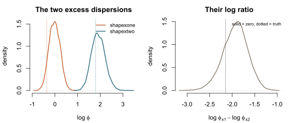

The families and their parameters
Source:vignettes/articles/families-and-parameters.Rmd
families-and-parameters.Rmd
library(brms)
#> Warning: package 'Rcpp' was built under R version 4.6.1
library(bicountbrms)This article describes the parameters that are fitted. The companion article The anatomy of a paired count describes the coordinates in which they are interpreted, and Choosing priors gives the recipes for both.
Trivariate reduction
Both families are constructed by trivariate reduction: three independent latent counts are drawn, and one of the three enters both observed counts. Holgate (1964) and Karlis and Ntzoufras (2003) use the construction with Poisson components; Kirkpatrick and Neale (2016) and Kirkpatrick (2022) with negative-binomial components.
N_shared is never observed. The likelihood sums it out
analytically over
,
where
,
and
are the probability mass functions of the three latent counts. With
Poisson components, this sum is Campbell’s (1934) equation (2.2). The first
source is the modelled response; the second is supplied as supplementary
integer data through vint(), because
brms::custom_family() declares a single response
column.
The shared latent count enters both observed counts and therefore induces their covariance, . It cancels from the difference,
so the difference depends on the two source-specific counts alone.
For Poisson latent counts, that difference is exactly
Skellam-distributed (Skellam 1946), which is why
bipois() induces the Skellam as its difference model.
brms requires one distributional parameter of every family to be
named mu. In these families, mu is the rate of
the shared latent count. Since
,
mu is not the mean of either observed count, nor of their
difference. The constraint is custom_family()’s rather than
a modelling choice, and the same applies to the spelling of the two
source-specific rates: custom_family() rejects a
distributional parameter name ending in a digit, so the code writes
lambdaone and lambdatwo where the
documentation writes
and
.
Poisson or negative-binomial latent counts
bipois() draws each latent count from a Poisson
distribution, so the variance is equal to the mean.
binegbin() draws each from NB2 instead and estimates three
scalar dispersions.
NB2
is Stan’s neg_binomial_2 and R’s
dnbinom(size = phi, mu = m): it has mean
and variance
,
so a larger
means less overdispersion, and the Poisson is the
limit.
| dpar | latent count | rate | dispersion |
|---|---|---|---|
mu, shapes
|
|||
lambdaone, shapexone
|
|||
lambdatwo, shapextwo
|
bipois() takes the three rates alone;
binegbin() takes all six. Every parameter uses a log
link.
The moments follow directly from the decomposition:
The covariance involves the shared latent count alone, so neither excess dispersion appears in it: (Kirkpatrick and Neale 2016). Freeing the two excess dispersions therefore changes both margins and the difference, and leaves the covariance unchanged; the correlation moves only through its denominator.
Two features of that covariance bound what the construction can represent. The covariance is a variance, so it cannot be negative: both families represent non-negative association only. It is also bounded above, because the shared count contributes to both observed variances,
for and the variances of the two observed counts, with the upper bound attained only when one source has no private component. In the Poisson case, each variance equals its mean, and this is the ceiling Holgate (1964) states and calls the drawback. A construction admitting negative correlation gives up the shared latent count, which is the quantity these families estimate.
An observation-level random effect on the source-specific components would be the obvious alternative to a scalar dispersion, and it fails synthetic recovery. With one observed pair per unit but three latent deviates per unit, the excess deviates absorb the residual: in the motivating dataset the population standard deviation of the excess was recovered as 0.37 against a true 0.85, and drawing fresh deviates gave against a true 19.2. A conditional posterior-predictive check does not expose that failure; a marginal one, drawing fresh deviates, does.
Tying the two excess dispersions
Both negative-binomial constructors estimate a separate dispersion
for each source-specific component. The two sources are different
instruments, and no argument requires their source-specific excess to be
equally overdispersed. Up to release 0.9.1, a single distributional
parameter shapex imposed
;
0.10.0 frees the constraint for both constructors.
To impose that constraint deliberately, route both distributional parameters through one non-linear parameter:
bf(y1 | vint(y2) ~ 1, mu ~ 1,
nlf(lambdaone ~ lamx), nlf(lambdatwo ~ lamx),
nlf(shapexone ~ shapexx), nlf(shapextwo ~ shapexx),
lamx ~ 1, shapes ~ 1, shapexx ~ 1, nl = TRUE)The generated Stan shows the tie directly. Both distributional parameters are assigned from the same non-linear predictor, so the model contains one free dispersion rather than two:
shapexone[n] = exp(nlp_shapexx[n]);
shapextwo[n] = exp(nlp_shapexx[n]);The tie is worth checking in the generated code rather than assuming,
because an untied model would still compile and still sample: it would
quietly fit the six-parameter model the formula was meant to constrain.
tests/testthat/test-stancode-shape.R pins both lines.
A prior on the tied parameter is written with
class = "b" and nlpar = "shapexx". Both fields
differ from the pre-0.10.0 spelling, which was
class = "Intercept" with dpar = "shapex". A
prior written the old way names no parameter in the tied model and is
dropped without a warning, which leaves the dispersion improper; see Choosing priors.
Under full pairing, every row informs both dispersions. Under partial
observation, the two are not equally identified: shapextwo
governs the always-observed margin and appears on both branches of the
likelihood, while shapexone appears on the matched branch
alone. A worked partially observed
fit shows what follows from that asymmetry.
Discrimination of two dispersions an order of magnitude apart
The get-started vignette recovers all six distributional parameters from a fully paired design. The question here is narrower: when and differ substantially, does the fit resolve them as different, or merely bracket each of them widely enough to contain the truth?
The simulation below sets the two an order of magnitude apart, at 0.7
and 6.0, and gives the design 300 rows across ten vessels. No
observation flag appears anywhere: this is binegbin() with
vint(y2) alone.
set.seed(20260825)
n_vessel <- 10L
n_per_vessel <- 30L
n <- n_vessel * n_per_vessel
truth <- list(
log_mu_int = log(6),
sd_vessel = 0.3,
lone = 6,
ltwo = 6,
shapes = 3,
shapexone = 0.7, # first source: strongly overdispersed
shapextwo = 6.0 # second source: mildly overdispersed
)
vessel <- rep(seq_len(n_vessel), each = n_per_vessel)
mu_i <- exp(truth$log_mu_int + truth$sd_vessel * rnorm(n_vessel)[vessel])
# One shared count per row, drawn once and entering both observed counts.
n_shared <- rnbinom(n, size = truth$shapes, mu = mu_i)
dat <- data.frame(
y1 = n_shared + rnbinom(n, size = truth$shapexone, mu = truth$lone),
y2 = n_shared + rnbinom(n, size = truth$shapextwo, mu = truth$ltwo),
vessel = factor(vessel)
)
c(cor = cor(dat$y1, dat$y2), var_y1 = var(dat$y1), var_y2 = var(dat$y2))
#> cor var_y1 var_y2
#> 0.4115147 69.9471460 36.2650056The pair is correlated because n_shared is drawn once
and added to both counts; drawing this component separately for each
count would give two independent counts with the same marginal
distributions and no covariance. The first count is the more variable of
the two, as
requires.
fit <- brm(
bf(y1 | vint(y2) ~ 1,
mu ~ 1 + (1 | vessel),
nlf(lambdaone ~ lamx), nlf(lambdatwo ~ lamx),
lamx ~ 1, shapes ~ 1, shapexone ~ 1, shapextwo ~ 1, nl = TRUE),
family = binegbin(),
stanvars = binegbin_stanvars(),
data = dat,
prior = c(
prior(normal(2, 1), class = "Intercept"),
prior(normal(2, 1), class = "b", nlpar = "lamx"),
prior(normal(0, 1.5), class = "Intercept", dpar = "shapes"),
prior(normal(0, 1.5), class = "Intercept", dpar = "shapexone"),
prior(normal(0, 1.5), class = "Intercept", dpar = "shapextwo")
),
chains = 4, iter = 2000, warmup = 1000,
seed = 20260825, refresh = 0, init = 0.5,
control = list(adapt_delta = 0.99, max_treedepth = 12),
backend = backend
)The prior on each log dispersion is normal(0, 1.5),
which spans roughly
at two standard deviations and so contains all three true values without
favouring any of them.
draws <- as.data.frame(fit)
qi <- function(x) c(median = median(x), lower = quantile(x, 0.025, names = FALSE),
upper = quantile(x, 0.975, names = FALSE))
recovery <- rbind(
shapexone = qi(exp(draws$b_shapexone_Intercept)),
shapextwo = qi(exp(draws$b_shapextwo_Intercept)),
shapes = qi(exp(draws$b_shapes_Intercept))
)
knitr::kable(
cbind(truth = c(truth$shapexone, truth$shapextwo, truth$shapes), recovery),
digits = 2
)| truth | median | lower | upper | |
|---|---|---|---|---|
| shapexone | 0.7 | 0.98 | 0.62 | 1.57 |
| shapextwo | 6.0 | 6.70 | 3.92 | 12.45 |
| shapes | 3.0 | 2.40 | 1.36 | 3.93 |
Each interval contains its true value. That much the vignette already established for a symmetric design. The claim particular to this section is the next one:
lr <- draws$b_shapexone_Intercept - draws$b_shapextwo_Intercept
lr_ci <- quantile(lr, c(0.025, 0.975), names = FALSE)
c(true_log_ratio = log(truth$shapexone) - log(truth$shapextwo),
median = median(lr),
lower = lr_ci[1],
upper = lr_ci[2])
#> true_log_ratio median lower upper
#> -2.148434 -1.917969 -2.513566 -1.417690The 95% posterior interval for excludes zero, so the data separate the two dispersions rather than the priors: both priors are identical, and centred at a log ratio of zero.
c(divergences = sum(nuts_params(fit, pars = "divergent__")$Value),
max_rhat = max(rhat(fit), na.rm = TRUE))
#> divergences max_rhat
#> 0.000000 1.005511
op <- par(mfrow = c(1, 2), mar = c(4.1, 4.1, 2.6, 1.1), bty = "n")
d1 <- density(draws$b_shapexone_Intercept)
d2 <- density(draws$b_shapextwo_Intercept)
plot(d1, xlim = range(d1$x, d2$x), ylim = c(0, max(d1$y, d2$y)),
lwd = 2, col = "#C4622D", main = "The two excess dispersions",
xlab = expression(log ~ phi), ylab = "density")
lines(d2, lwd = 2, col = "#2D6A7F")
abline(v = log(truth$shapexone), lty = 3, col = "#C4622D")
abline(v = log(truth$shapextwo), lty = 3, col = "#2D6A7F")
legend("topright", bty = "n", lwd = 2, cex = 0.85,
col = c("#C4622D", "#2D6A7F"),
legend = c("shapexone", "shapextwo"))
plot(density(lr), lwd = 2, col = "#8A8072", main = "Their log ratio",
xlab = expression(log ~ phi[x1] - log ~ phi[x2]), ylab = "density")
abline(v = 0, lwd = 2)
abline(v = log(truth$shapexone) - log(truth$shapextwo), lty = 3)
mtext("solid = zero, dotted = truth", side = 3, line = -1.1,
cex = 0.7, adj = 0.97)
plot of chunk dispersion-posteriors
par(op)Under partial observation, the same demonstration requires a majority
of rows to be matched, because shapexone is then informed
by those rows alone.
tests/testthat/test-binegbin-dispersions.R runs both
designs.
Quantities returned by posterior_epred() and
posterior_predict()
posterior_epred() returns
the expected first count given the second count observed on that row. The returned quantity is a conditional expectation rather than a marginal one, and the conditioning is on data rather than on a fitted value.
For bipois(), the conditional distribution is available
in closed form: conditioning a sum of independent Poisson counts on its
total gives a Binomial, so
and the expectation is
. A sum of negative-binomial
counts has no Binomial conditional, so binegbin() evaluates
the discrete conditional law over
and sums it. Both are exact, and each agrees with the mean of that
family’s own posterior_predict() draws to within Monte
Carlo error.
posterior_epred(fit), and therefore
fitted() and conditional_effects(), dispatch
to the family’s own method in the ordinary way. Neither family supports
resp_trunc(), so the brms limitation by which
posterior_epred() errors on a truncated custom family
cannot arise here.
Checks performed
The test suite is run with and without a Stan toolchain; the toolchain-free run skips every model fit. For the likelihood, the suite verifies:
- the Stan implementation against an independent brute-force reference written in R, agreeing to about across a grid of rates and dispersions and at edge cases;
- normalisation to 1, over the pair on the matched branch and over on the unmatched one;
- the moment identities above, by exact summation over the joint probability mass function rather than by simulation;
- the marginal identity, that summing the matched branch over reproduces the unmatched branch;
- the Poisson limit, checked as a limit — the discrepancy must shrink as grows — rather than at a single tolerance.
For the post-processing methods, the suite verifies that each expectation equals the mean of its own predictive draws, that the observation flag changes neither the prediction nor the expectation, and that exchanging the two excess dispersions anywhere they are routed produces a detectably different answer.